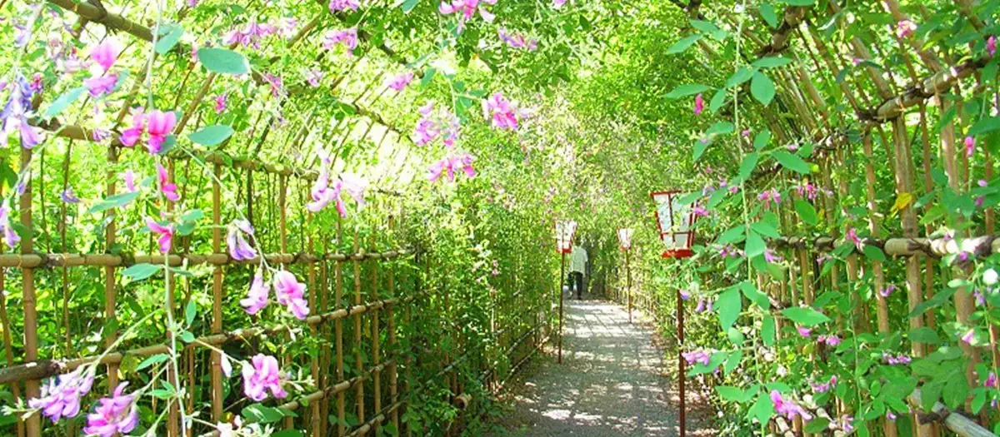
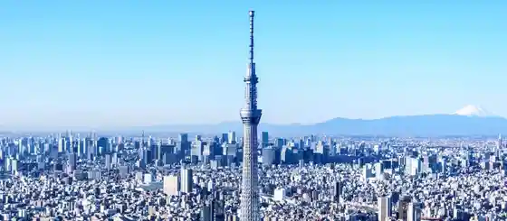
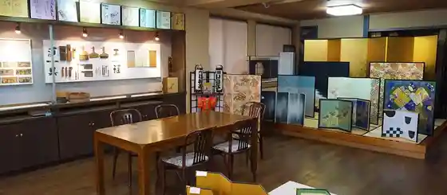

Sumida, Tokyo: things to do, food and stays
Sumida · Tokyo
Sumida
Highlighted on the Tokyo map.

Sights
Ko Shima Hyaku Flower Garden
The Sumida Hokusai Museum
Tokyo Skytree

Edo-Tokyo Museum
Kataoka Byobu Mise

Sumida Triphony Hall
Ryogoku Fireworks Museum
Tobu Museum
Tohaku Hige Park
Shitamachi Ninjo Kirakira Tachibana Shopping Street
Eko-in Temple
Hato no Machi Tori Shopping Street
Tokyo Skytree Town
Sumida Aquarium
Dining
Toritanaka
酒亭 田中

Meat restaurant in Sumida, Tokyo.
Yakitori Omino Reservation
焼鳥 おみ乃

Meat restaurant in Sumida, Tokyo.
Teuchi Ren
手打ち 蓮

Noodle restaurant in Sumida, Tokyo.
Takesue Tokyo Premium
竹末東京Premium

Noodle restaurant in Sumida, Tokyo.
Jiman Kusamochi
志”満ん草餅

Sweets and bakery shop in Sumida, Tokyo.
Midoricho Ikoma
緑町 生駒

Chinese or Asian restaurant in Sumida, Tokyo.
Hokusai Sabo
北斎茶房

Sweets and bakery shop in Sumida, Tokyo.
Chomeiji Sakura Mochi
長命寺 桜もち

Cafe in Sumida, Tokyo.
Chuka Soba Manchiken
中華そば 満鶏軒

Noodle restaurant in Sumida, Tokyo.
Kototoi Dango
言問団子

Sweets and bakery shop in Sumida, Tokyo.
Hasegawa Reservation
はせ川

Meat restaurant in Sumida, Tokyo.
Tori Ki
とり喜

Meat restaurant in Sumida, Tokyo.
Soba Kappou Nagano Reservation
蕎麦割烹 ながの

Noodle restaurant in Sumida, Tokyo.
Menya Saichi
麺や 佐市

Noodle restaurant in Sumida, Tokyo.
SPICE Cafe
スパイスカフェ

Chinese or Asian restaurant in Sumida, Tokyo.
Sumida Coffee
すみだ珈琲

Cafe in Sumida, Tokyo.
Azumabashi Yabusoba
吾妻橋 やぶそば

Noodle restaurant in Sumida, Tokyo.
Shiki no Aji Fujiyoshi
四季の味 ふじ芳

Izakaya or bar in Sumida, Tokyo.
Echigoya Wakasa
越後屋若狭

Sweets and bakery shop in Sumida, Tokyo.
shake tree burger&bar
シェイクツリー バーガー＆バー

Izakaya or bar in Sumida, Tokyo.
Tomo Rakunou 63℃
東毛酪農 63℃

Sweets and bakery shop in Sumida, Tokyo.
Ramen Minmin
ラーメン ミンミン

Noodle restaurant in Sumida, Tokyo.
chuukaryouri tokutake
中華料理 徳武

Noodle restaurant in Sumida, Tokyo.
Menkyou Banrai
麺響 万蕾

Noodle restaurant in Sumida, Tokyo.
Marumitsu En
丸光苑

Meat restaurant in Sumida, Tokyo.
Shio Pan Ya Pan Maison Sumida asakusa doori ten
塩パン屋 パン・メゾン すみだ浅草通り店

Sweets and bakery shop in Sumida, Tokyo.
Coffee Senmon Ten Tomii
珈琲専門店 トミィ

Cafe in Sumida, Tokyo.
Catholic
カトリカ

European restaurant in Sumida, Tokyo.
Kinshicho Chuka Soba Sanshiki
錦糸町中華そば さん式

Noodle restaurant in Sumida, Tokyo.
Tokusen Hiyamugi Kiwadachi Reservation
特撰ひやむぎ きわだち

Noodle restaurant in Sumida, Tokyo.
Spice Bar Nekoroku
スパイスバル猫六

Chinese or Asian restaurant in Sumida, Tokyo.
Sandaime Maruten Morishita ten
三代目まる天 森下店

Izakaya or bar in Sumida, Tokyo.
Edo Soba Hosokawa
江戸蕎麦 ほそ川

Noodle restaurant in Sumida, Tokyo.
Bakushu Club Popeye
麦酒倶楽部 ポパイ

Izakaya or bar in Sumida, Tokyo.
Kuriya
くり家

Meat restaurant in Sumida, Tokyo.
Bakery & Public Penny Lane Soramachi ten
BAKERY＆PUBLIC PENNY LANE ソラマチ店

Sweets and bakery shop in Sumida, Tokyo.
Stay
Ryogoku View Hotel
両国ビューホテル

Ryogoku View Hotel is a hotel in Sumida, Tokyo.
Keisei Richmond Hotel Tokyo Kinshicho
京成リッチモンドホテル東京錦糸町

Keisei Richmond Hotel Tokyo Kinshicho is a hotel in Sumida, Tokyo.